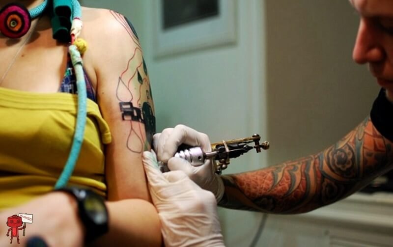

История Black Needle Studio
Black Needle Studio — один из самых известных тату-салонов в Брянске. Название салона происходит от английских слов "Black Needle" — "Черная Игла", что символизирует искусство татуировки как темный, загадочный процесс создания искусства на коже. Мастерство и внимание к деталям сделали этот салон культовым местом для поклонников татуировок.
История салона началась в 2000 году, когда несколько художников-татуировщиков решили объединить свои усилия, чтобы создать уникальное место, где искусство татуировки будет поднято на новый уровень. Сначала салон находился в небольшом помещении, но благодаря стремительному росту популярности и признанию среди клиентов, он быстро расширился и переехал в просторное здание в центре Брянска.
Салон отличается своим творческим подходом и индивидуальным стилем. Команда мастеров владеет различными техниками и стилями татуировок, предлагая клиентам возможность выбрать то, что подходит именно им. Black Needle Studio также предлагает услуги по пирсингу и другим видам боди-арта.
За годы работы салон приобрел репутацию надежного места, где каждый клиент получает качественное обслуживание и уникальные, тщательно продуманные татуировки. Мастера салона регулярно участвуют в международных выставках и фестивалях, представляя искусство татуировки на мировом уровне.
Салон заботится о комфорте и безопасности своих клиентов, строго следуя всем стандартам гигиены и безопасности. Black Needle Studio гордится своей историей и продолжает радовать клиентов высококачественным искусством татуировки.
